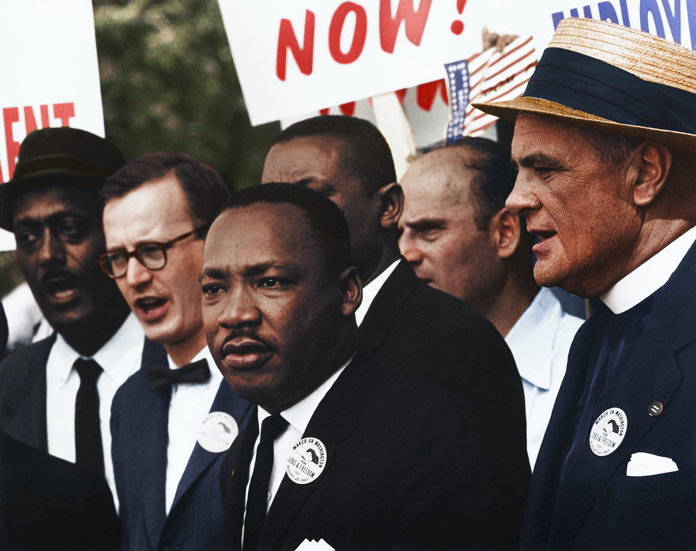

Dr. Martin Luther King Jr.

Dr. King is seen here addressing the public - part of his lifelong campaign against systemic racism.
- 1929 : Born in Atlanta, Georgia
- 1946: The Atlanta Constitution publishes a letter to the editor from King supporting minority rights
- 1954: Becomes minister of Dexter Avenue Baptist Church, Montgomery, Alabama
- 1956: King's house is bombed and a U.S. Supreme Court ruling prompts Montgomery to desegregate buses
- 1957: King helps found Southern Christian Leadership Conference (SCLC)
- 1960: Joins his father as co-pastor of Ebenezer Baptist Church in Atlanta
- 1963: King is arrested and jailed during anti-segregation protests in Birmingham; writes Letter From Birmingham City Jail, arguing that individuals
have the moral duty to disobey unjust laws and delivers "I Have a Dream" speech during the March on Washington attended by 200,000 protesters, creates powerful image, builds momentum for civil rights legislation - 1964: Congress passes Civil Rights Act of 1964, outlawing segregation in public accommodations and discrimination in education and employment. King receives Nobel Peace Prize
- 1965: King and SCLC join voting-rights march from Selma to Montgomery; police beat and tear gas marchers; King addresses rally before state capitol, builds support for voting rights. Congress passes Voting Rights Act of 1965, which suspends (later bans)
literacy tests and other restrictions to prevent blacks from voting
Here's a time line of Dr. Martin Luther King Jr. life:
"I have a dream that my four little children will one day live in a nation where they will not be judged by the color of their skin but by the content of their character." ,
- Dr. Martin Luther King Jr.